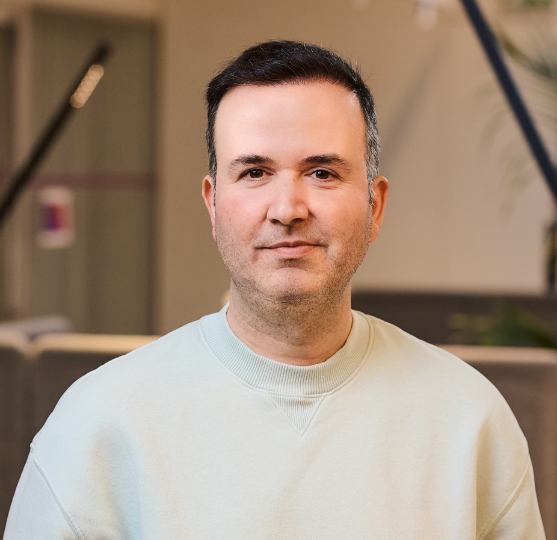

Data Platforms
Lakehouse architecture, data engineering, ETL/ELT, modeling and platform modernization.
Data Solution Architect focused on building modern data platforms, lakehouse architectures and practical AI solutions for enterprise environments.

I’m a Data & Cloud Solution Architect with 15+ years of experience across enterprise architecture, cloud platforms and technology consulting.
My work sits at the intersection of data engineering, platform architecture and emerging AI capabilities. I enjoy translating complex business needs into secure, scalable solutions—and helping teams turn architecture into outcomes.
Combining architecture, engineering and consulting to build platforms that scale with the business.
Lakehouse architecture, data engineering, ETL/ELT, modeling and platform modernization.
Secure, resilient architectures across AWS, Microsoft Azure and hybrid environments.
Generative AI, LLM applications, agentic workflows and enterprise AI adoption.
Security, access controls, governance frameworks and responsible data sharing.
Technical strategy, stakeholder alignment and translating requirements into solutions.
Standardization, automation, resilience and operational best practices.
A path through data platforms, cloud architecture and enterprise technology consulting.
Designing multi-region Snowflake and Databricks data platforms for global enterprise clients across AWS and Microsoft Azure. Contributing as a Subject Matter Expert to Snowflake SnowPro certification development and technical reviews.
Architected a Databricks-based data platform, automated ingestion and transformation workflows, and established enterprise data governance and security frameworks.
Designed enterprise cloud, cybersecurity and connectivity solutions, translating customer requirements into scalable architectures and proposals.
Designed secure hybrid cloud architectures using HPE GreenLake and advised enterprise customers on modernization and cloud adoption.
Designed enterprise private, public and hybrid cloud solutions across managed services, virtualization, SAP Basis and container platforms.
Designed enterprise cloud, security and managed services solutions, including e-Transformation offerings.
Designed private, public and hybrid cloud and IT outsourcing solutions, supporting enterprise presales and business development.
Scalable data platform architectures combining ingestion, transformation, governance and analytics.
Resilient platform designs covering cross-region replication, failover and access synchronization.
Exploring practical Generative AI and agent-based solutions for enterprise workflows.
Governance and security capabilities that enable trusted, compliant and well-managed data access.
A few credentials reflecting my focus across data platforms, cloud and AI.
I'd be happy to connect and exchange ideas.